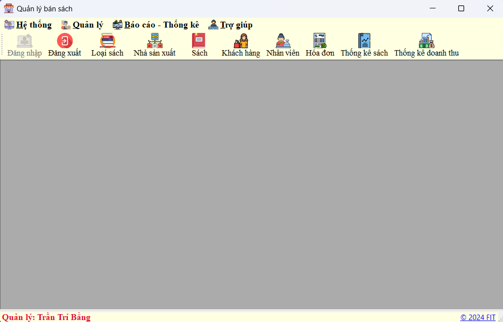

Hướng dẫn sử dụng Màn hình chính.
Giao Diện Chính Khi khởi động ứng dụng, bạn sẽ thấy giao diện chính với các thanh menu và biểu tượng chức năng. Các chức năng chính được sắp xếp theo từng danh mục trên thanh công cụ phía trên màn hình.
1. Hệ Thống
Đăng nhập: Chức năng này cho phép người dùng đăng nhập vào hệ thống để sử dụng các chức năng khác.
Đăng xuất: Chức năng này cho phép người dùng đăng xuất khỏi hệ thống.
2. Quản Lý
Loại sách: Quản lý các loại sách có trong cửa hàng. Bạn có thể thêm, sửa hoặc xóa thông tin về các loại sách.
Nhà sản xuất: Quản lý thông tin về các nhà sản xuất hoặc nhà xuất bản.
Sách: Quản lý thông tin về các cuốn sách bao gồm thêm mới, chỉnh sửa hoặc xóa thông tin sách.
Khách hàng: Quản lý thông tin khách hàng, giúp lưu trữ và cập nhật thông tin khách hàng.
Nhân viên: Quản lý thông tin nhân viên làm việc trong cửa hàng.
3. Báo Cáo - Thống Kê
Hóa đơn: Xem và quản lý các hóa đơn bán hàng. Bạn có thể tìm kiếm, xem chi tiết và in hóa đơn.
Thống kê sách: Xem báo cáo thống kê về số lượng sách bán ra, tồn kho, và các thông tin liên quan đến sách.
Thống kê doanh thu: Xem báo cáo thống kê doanh thu theo ngày, tháng, năm hoặc theo các tiêu chí khác.
4. Trợ Giúp
Chức năng này cung cấp các tài liệu hướng dẫn, hỗ trợ người dùng trong quá trình sử dụng ứng dụng.
Chức Năng Đặc Biệt
Chưa đăng nhập: Khi chưa đăng nhập, ứng dụng sẽ hiển thị thông báo "Chưa đăng nhập" ở góc dưới bên trái. Bạn cần đăng nhập để sử dụng các chức năng khác của ứng dụng. Khi đăng nhập sẽ hiển thị tên tài khoản đăng nhập
Thông tin bản quyền: Góc dưới bên phải hiển thị thông tin bản quyền của ứng dụng, thuộc về FIT (Khoa Công nghệ Thông tin).